Межрегиональный фотоконкурс «Люди Великой страны», посвященный Дню народного единства
Итоги межрегионального фотоконкурса «Люди Великой страны»
С 1 октября по 4 ноября в «Кванториуме» Бийского промышленно-технологического колледжа проходил масштабный межрегиональный фотоконкурс «Люди Великой страны», приуроченный ко Дню народного единства.
Мы были поражены географией проекта! В конкурсе приняли участие 37 юных фотографов из 6 регионов России: Республика Бурятия, Ленинградская область, Красноярский край, Алтайский край, Воронежская область, Кемеровская область.
На суд жюри было представлено 52 работы, каждая из которых по-своему раскрывала многогранный образ нашей большой страны и её жителей.
Работы оценивали:
— Филиппов Дмитрий Павлович, фотограф, член Союза фотографов Сибири.
— Леготкина Ирина Сергеевна, фотограф, директор фотостудии «Квадрат».
Экспертное жюри оценивало работы по 10-балльной системе, обращая внимание на:
— соответствие теме
— техническое качество снимка
— оригинальность и креативность
— художественную выразительность
— композицию и цвет
Мы благодарим всех участников за их творческий взгляд и работы, в которые они вложили частичку своей души!
Поздравляем победителей и призеров!
Мы были поражены географией проекта! В конкурсе приняли участие 37 юных фотографов из 6 регионов России: Республика Бурятия, Ленинградская область, Красноярский край, Алтайский край, Воронежская область, Кемеровская область.
На суд жюри было представлено 52 работы, каждая из которых по-своему раскрывала многогранный образ нашей большой страны и её жителей.
Работы оценивали:
— Филиппов Дмитрий Павлович, фотограф, член Союза фотографов Сибири.
— Леготкина Ирина Сергеевна, фотограф, директор фотостудии «Квадрат».
Экспертное жюри оценивало работы по 10-балльной системе, обращая внимание на:
— соответствие теме
— техническое качество снимка
— оригинальность и креативность
— художественную выразительность
— композицию и цвет
Мы благодарим всех участников за их творческий взгляд и работы, в которые они вложили частичку своей души!
Поздравляем победителей и призеров!
Младшая возрастная категория (7-9 лет)
- Батищев Платон Владимирович (Красноярский Кванториум, г. Ачинск, наставник Дорошенко Виталий Викторович)
- Полубояринов Марк Николаевич (Красноярский Кванториум, г. Ачинск, наставник Чигринский Иван Сергеевич)
- Миленин Алексей Алексеевич (Алтайский край, Волчихинский район, село Волчиха, наставник Кудрявцева Наталья Анатольевна)
 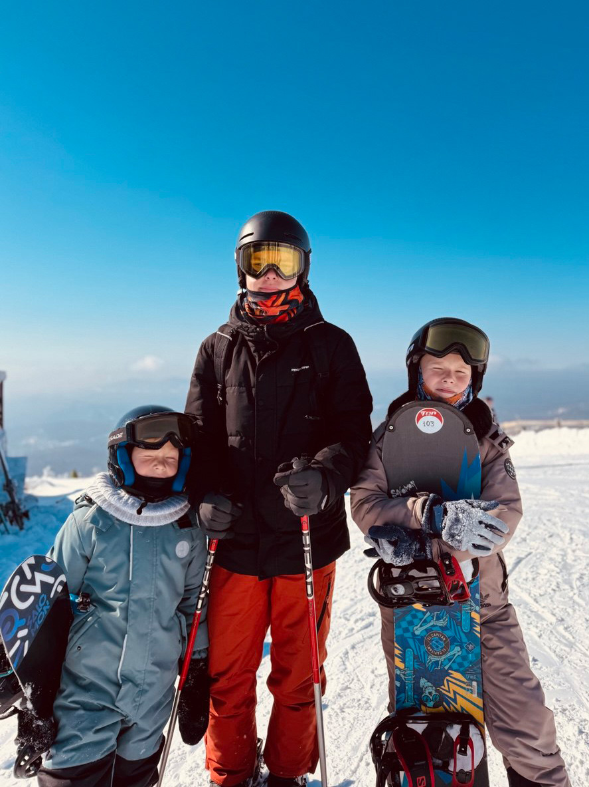
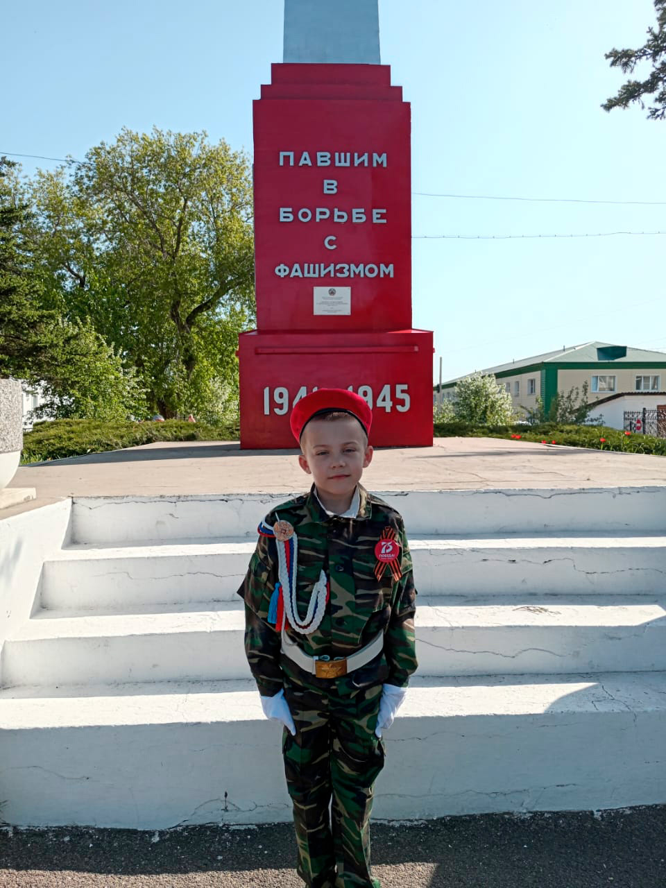
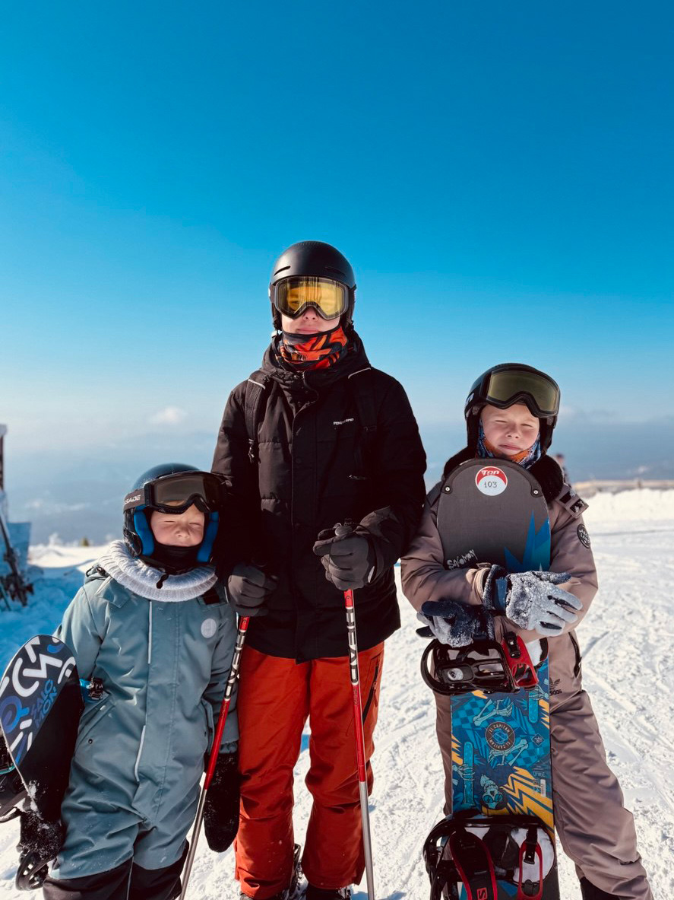
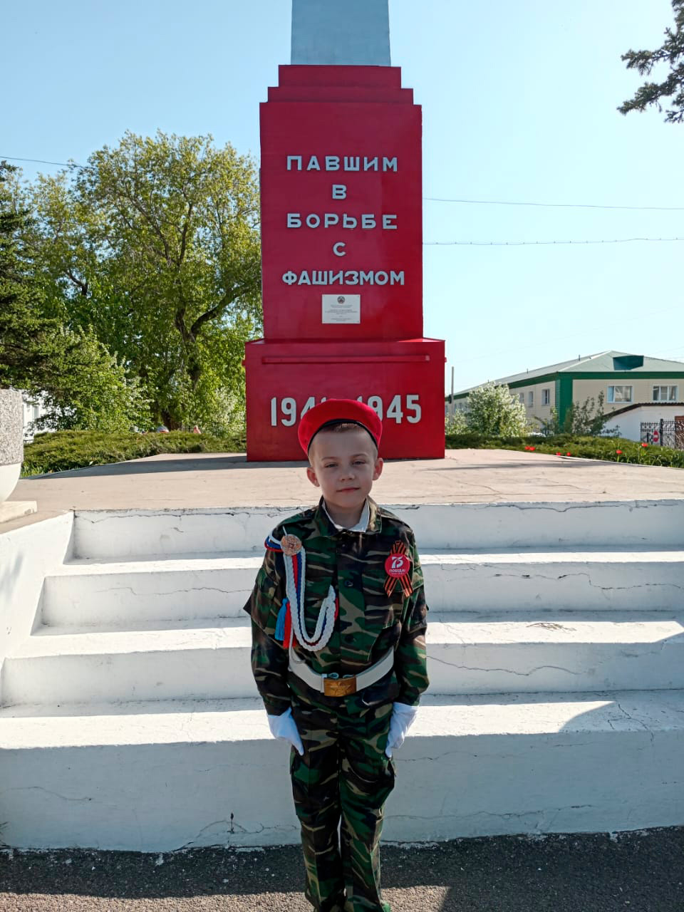
Средняя возрастная категория (10-13 лет)
- Мышляева Варвара Алексеевна (Красноярский Кванториум, г. Ачинск, наставник Дорошенко Виталий Викторович)
- Пирогов Алексей Михайлович (Красноярский Кванториум, г. Ачинск, наставник Дорошенко Виталий Викторович)
- Сердюк Анастасия Александровна (Алтайский край, село Волчиха, наставник Кудрявцева Наталья Анатольевна)
- Максимова Валерия Сергеевна (Красноярский Кванториум, г. Ачинск, наставник Дорошенко Виталий Викторович)
- Жданова Дарья Артёмовна (г. Бийск, фотостудия «Фокус», наставник Масличенко Геннадий Степанович)
Старшая возрастная категория (14-17 лет)
- Царёва Вера Андреевна (г. Бийск, фотостудия «Фокус», наставник Масличенко Геннадий Степанович)
- Кирьянова Екатерина Олеговна (г. Бийск, фотостудия «Фокус», наставник Масличенко Геннадий Степанович)
- Федотова Кристина Олеговна (республика Бурятия, наставник Зайцев Владимир Александрович)
- Шевчук Милана Дмитриевна (Кемеровская область, Кванториум 42, наставник Шевчук Диана Дмитриевна)
- Сорокин Иван Константинович (г. Бийск, фотостудия «Фокус», наставник Масличенко Геннадий Степанович)
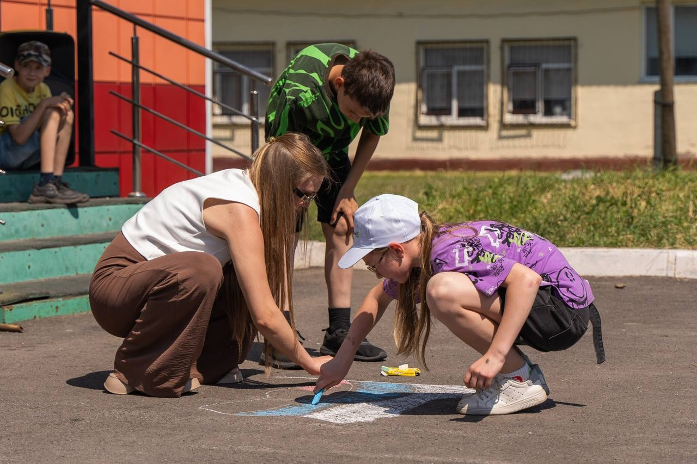
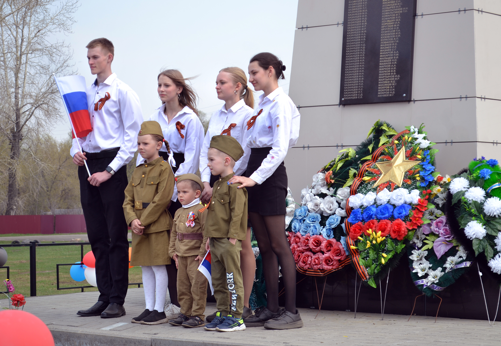
 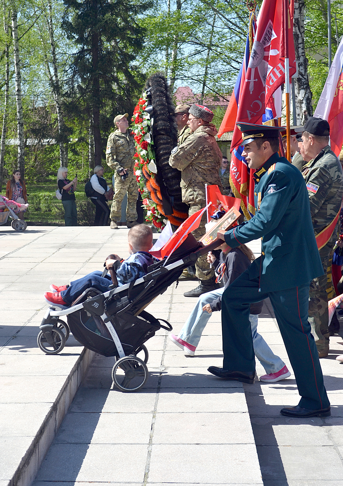
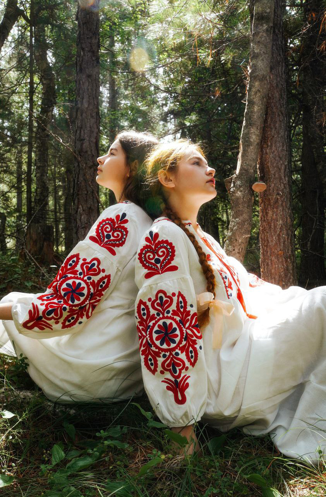
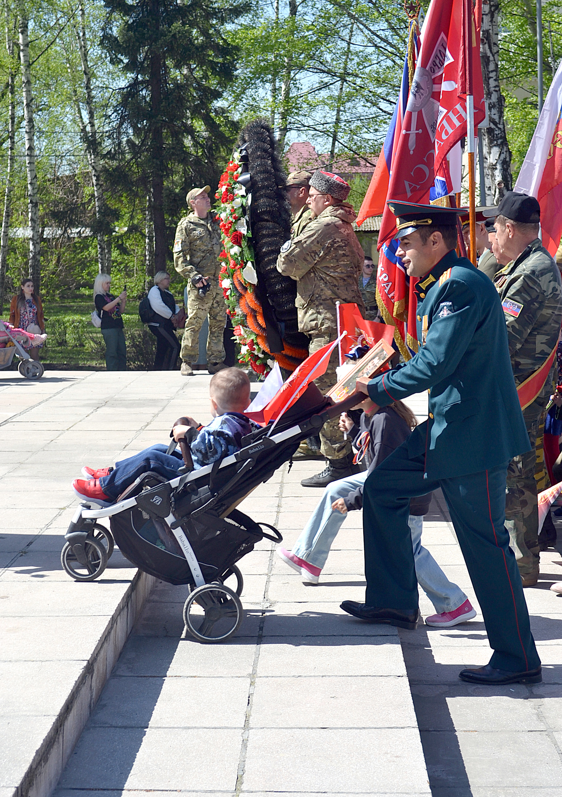
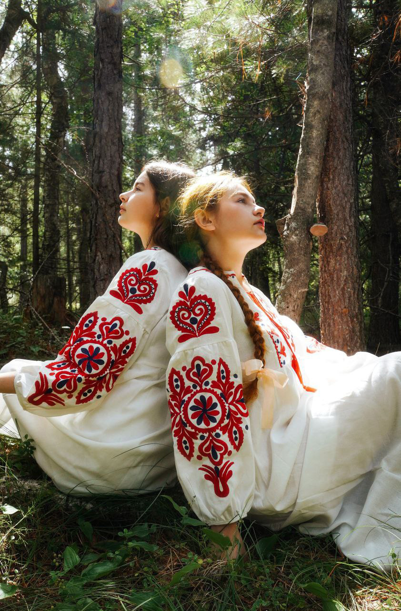
Цель Конкурса: создание условий для стимулирования интереса обучающихся к фотографии, предоставление возможности продемонстрировать свое мастерство и идеи в изображении традиций народа, профессий и семейных ценностей через фотографию.
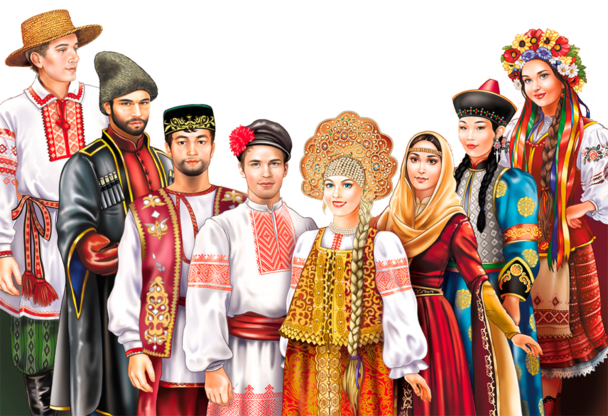Условия участия
Участие в Конкурсе является бесплатным. Конкурс является публичным и открытым. Формат проведения – дистанционный.
Конкурс проводится с 01.10.2025 по 31.10.2025
в КГБПОУ
«Бийский промышленно-технологический колледж» структурном
подразделении Детский технопарк «Кванториум».
Возрастные категории участников:
1 группа - 7-9 лет
2 группа – 10-13 лет
3 группа – 14-17 лет
Требования к работам
На конкурс принимаются фотографии (до 3х фотографий от 1 участника), которые соответствуют теме конкурса «Люди великой страны». Это могут быть фотографии изображающие традиции народов РФ, семейные ценности, профессии, а также фотографии, посвященные году защитника Отечества и 80-летию Победы в Великой Отечественной войне 1941-1945 годов.